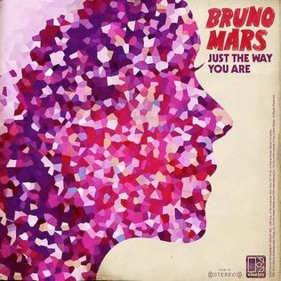
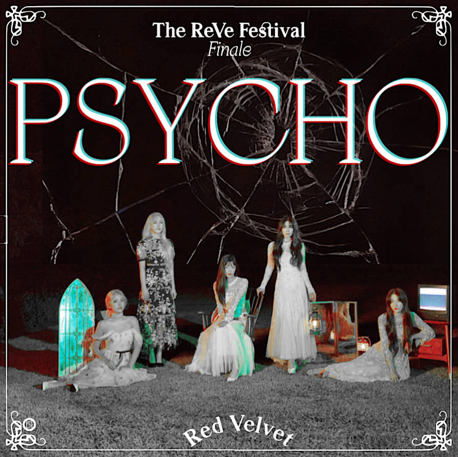

Koleksi Lagu

Dear God
'Dear God' menjadi salah satu lagu populer milik Avengod Sevenfold yang dirilis pada tahun 2009 dengan genre Country Rock.
Details

Just The Way You Are
Dalam lagu Just The Way You Are oleh Bruno Mars mengajak kita untuk lebih percaya diri, buat standar kecantikanmu tersendiri dan jangan berpatok pada makna kecantikan secara umum.
Details
Cari Jodoh
Cari Jodoh adalah lagu dari band Wali dan masuk dalam album kedua mereka Cari Jodoh. Lagu ini dirilis sebagai single pertama dari album.
Details

Psycho
"Psycho" adalah sebuah lagu dan singel yang direkam oleh grup wanita Korea Selatan, Red Velvet. Lagu ini merupakan singel utama dari album kompilasi mereka The ReVe Festival: Finale, yang dirilis bersamaan dengan video klipnya pada 23 Desember 2019.
Details